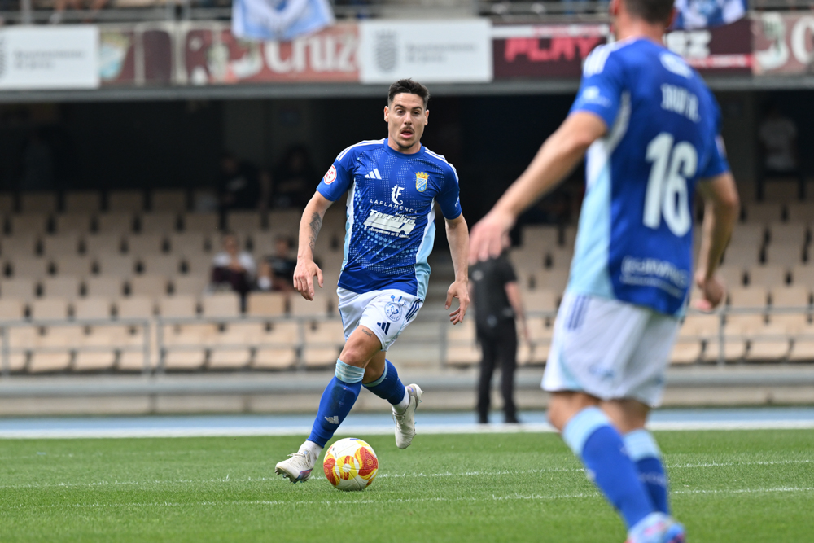

Moi extends his stay at Xerez CD for the 2026/27 season

Foto: PuroXerecismoThe centre-back from La Liara, who joined the blue-and-whites last season from Ourense CF, will remain for another year strengthening the Xerez back line.
Xerez CD have confirmed the renewal of Moisés Rodríguez Lainez, 'Moi', a centre-back born in La Liara on 2 April 1997, who will stay with the blue-and-white side for the 2026/27 season, his second consecutive campaign in Jerez.
Moi joined the club last summer from Ourense CF, where he had played 1,822 minutes in Primera Federación. Coming through the Cádiz CF academy, where he was champion in two consecutive years with the reserve side in Tercera División Group X, he made his first-team debut in Segunda División 'A' before continuing his development at CD Utrera and CF Villanovense. In the 2022/23 season he achieved promotion to Primera RFEF with UD Melilla, being a key player across both campaigns and scoring 5 goals.
The club highlights the toughness, ball-playing ability and aerial power he brings at both ends of the pitch, qualities head coach Xavi Molist's staff consider key to strengthening the Xerez back line for the 2026/27 season.
← Back to home